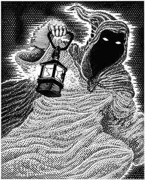

幽灵 · Ghost
 |
|
幽灵是邪恶人类的亡魂：他们生前罪恶深重，死后因此被赋予（或诅咒为）不死之身。幽灵夜间或在黑暗之处游荡，憎恨善良与生命，渴望吸取活人的生命精华。幽灵没有实体，处于灵界；通常只有同样处于灵界的生物能遭遇它们，但非灵界生物也能看见。
幽灵的超自然力量极其强大；类人生物只要看见它，便会衰老 10 年，并因恐慌逃跑 2–12 回合，除非通过对抗魔法的豁免检定。6 级以上牧师对此免疫；其他 8 级以上类人生物的豁免检定获得 +2 加值。
幽灵有两种攻击方式。它会对 6 寸内的生物施展魔法罐；若未能夺取目标身体，便会半实体化并以触碰攻击。幽灵未半实体化时，只有灵界生物或通过心灵感应才能与之交战；此时护甲等级为 8。若它半实体化，护甲等级变为 0，只能被银制武器（仅造成正常伤害的一半）或魔法武器击中。半实体化幽灵命中对手会使其衰老 10–40 年。只有处于灵界状态的生物才能用法术攻击幽灵。
人类——包括矮人、精灵、侏儒与半身人——被幽灵杀死后会永远死亡。